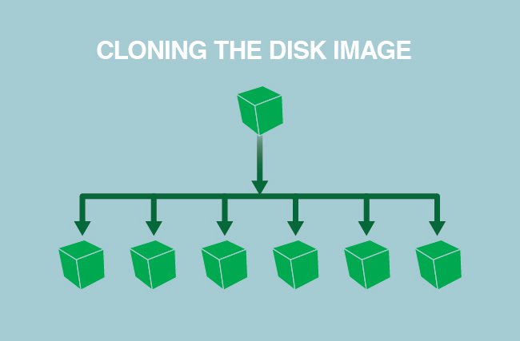

Automating Server Builds
Updated by Linode Written by Linode
Why You Should Automate Server Builds
Manually configuring systems is a good way to learn, but it’s also a time consuming process which is prone to human error. There are multiple ways to automate deploying new systems and various degrees to which that automation can be applied.
For example, if your needs are relatively straightforward and concise, a shell script or Linode StackScript could be all that is necessary. For more complex solutions, configuration orchestration and management exists to deploy and manage fleets of systems and services across multiple regions, networks, and service providers.
Working with a Golden Image
Using a golden image as a configuration base is a frequent starting point in cloud environment automation. This helps quickly deploy multiple systems which are exactly identical. Across the industry, golden images are also referred to as master, base, or clone images, among other terms. Irrespective of name, the idea behind a golden disk is simple: create the desired image and preserve it for cloning/deploying to other servers, thereby simplifying the deployment process and eliminating configuration gap.

Create a Golden Image
- Create a new Linode.
- Configure all packages, applications, and system settings as desired.
- Remove any system users you don’t want to appear on your duplicated systems.
- Shut down the Linode and either:
- Duplicate the disk.
- Alternatively, take a snapshot of the disk with Linode Backups.
- Store your golden image. This can be done in a variety of ways. A few examples are:
- As a snapshot using Linode Images or Linode Backups.
- In a version control system running on a remote or local server.
- On local storage.
Restore a Golden Image
- Copy the duplicate disk to your other Linodes, either using the Linode API or manually. If you’re using a Linode Backups snapshot, you would restore it to the desired Linodes.
- Create configuration profiles on those additional Linodes to boot using the duplicated disk.
- Any user credentials from the golden image will also be on the duplicated disks so you should change the new system’s root password.
- Update the new Linode’s hostname.
- If your golden system was configured to use a static IP address, you’ll also need to reconfigure the IP address on your duplicated disks.
Third-Party Tools
Golden disks are capable of handling automated server builds for most individuals and small businesses, but if you work for a large business that manages dozens of Linodes, you may need to turn to third-party configuration management and orchestration tools, such as:
Puppet: An open source configuration management tool that manages systems declaratively. It can automates IT tasks like application configuration, patch management, and even infrastructure audit and compliance. See the following Puppet guides:
Chef: An open source configuration management tool used to turn your infrastructure into code. See the Chef website for more information. The knife Linode subcommand can also be used to manage Linodes with Chef. See the following Chef guides to get started:
Note
Knife Linode is based on Linode’s deprecated APIv3.Ansible: An open source platform for configuring and managing systems. It works by connecting to your systems via SSH — it doesn’t install anything on the remote systems. See the AnsibleWorks website for more information. Read more about the Linode Module from Ansible in the official documentation. To start using Ansible, check out the following guides:
Note
The Linode Module from Ansible is based on Linode’s deprecated APIv3.Salt: Salt (also referred to as SaltStack) is a Python-based configuration management and orchestration system. Salt uses a master/client model in which a dedicated Salt master server manages one or more Salt minion servers. To learn more about Salt, see the following guides:
- A Beginner’s Guide to Salt
- Getting Started with Salt - Basic Installation and Setup
- SaltStack Command Line Reference
- Introduction to Jinja Templates for Salt
- Test Salt States Locally with KitchenSalt
- Secrets Management with Salt
- Use and Modify Official SaltStack Formulas
- Use Salt States to Configure a LAMP Stack on a Minion
- Monitoring Salt Minions with Beacons
- Create a Salt Execution Module
- Automate Static Site Deployments with Salt, Git, and Webhooks
- Use Salt States to Create LAMP Stack and Fail2ban Across Salt minions
- Configure and Use Salt Cloud and Cloud Maps to Provision Systems
Terraform: Terraform by HashiCorp is an orchestration tool that allows you to represent your Linode instances and other resources with declarative code inside configuration files, instead of manually creating those resources via the Linode Manager or API. This practice is referred to as Infrastructure as Code, and Terraform is a popular example of this methodology.
Note
The Terraform Linode provider is based on Linode’s APIv4.- A Beginner’s Guide to Terraform
- Introduction to HashiCorp Configuration Language (HCL)
- Use Terraform to Provision Linode Environments
- Import Existing Infrastructure to Terraform
- Secrets Management with Terraform
- Create a NodeBalancer with Terraform
- Deploy a WordPress Site Using Terraform and Linode StackScripts
- Create a Terraform Module
There are plenty of other third-party configuration management tools to be used should the above options not suit your needs.
Join our Community
Find answers, ask questions, and help others.
This guide is published under a CC BY-ND 4.0 license.